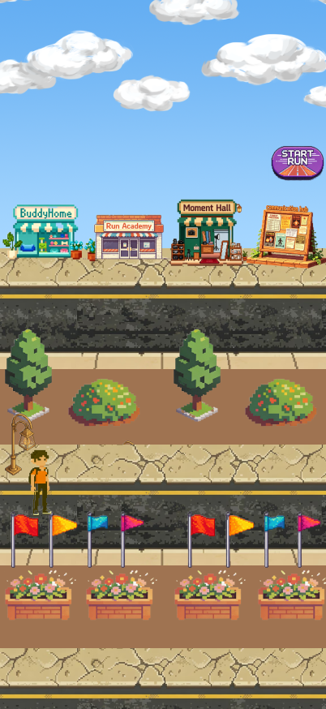
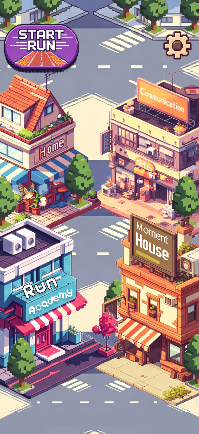
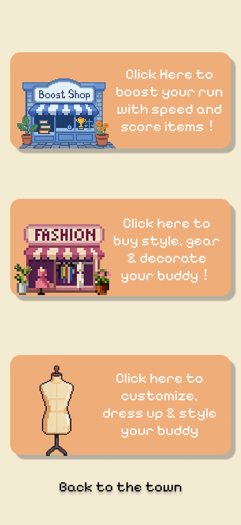
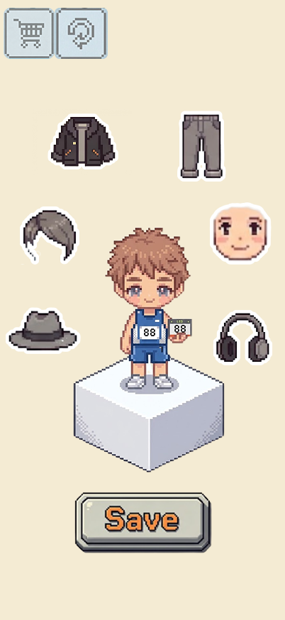
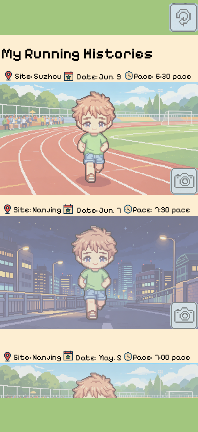
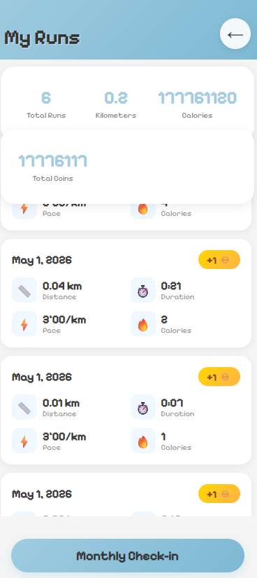

LITTLE
TOWN
Exclusive Preview & Invitation
Loading
put your mouse on the ticket
Exclusive Preview & Invitation
.png)
✦ Companion-based Gamified Running Buddy ✦ Beginner-friendly ✦ Community Co-creation
🎯 Key Findings： Existing products generally lack "deep gamification narrative", neglect emotional companionship for beginners and safe running volume guidance; social functions focus on competition rather than lightweight encouragement. RunBuddy will fill the gap of "companionship + in-time rewards + injury prevention mechanisms".
21 years old, XJTLU student who wants to lose weight and relieve stress through running but has never persisted. Owns an Apple Watch but is intimidated by professional data. Likes cute things and costume collection.
Goals： Form habits with low threshold, gain companionship and positive feedback, avoid sports injuries.
Needs： Minimalist interface, real-time encouragement from cartoon companion, calories exchanged for costumes, safe route prompts, non-competitive data display.
33 years old, manager of a Suzhou running group (600 members), uses Garmin watch and is annoyed by Joyrun ads. Hopes to efficiently help beginners integrate.
Goals： No adds bothering + group event functions, share experience ad-free.
Needs： Community hub and bulletin board light social features.
Product Impact: Emily drives cute companionship and simple guidance; Mike drives community events, forming a mutually supportive ecosystem.


Crazy Eights Method: Each team member created 8 sketches in 8 minutes (1 minute each), exploring diverse UI concepts including companion home screens, route tracking, in-run encouragement, and costume shops.
Reasons for Selection： Directly addresses the lack of "deep narrative gamification" in literature, combines Sigma's campus advantages with Joyrun's route fun, fills the frustration caused by excessive competition, and makes running sustainable.
前端框架：纯 HTML/CSS/JS，无框架依赖
脚本语言：JavaScript (ES6+)
样式方案：CSS3 + CSS Variables
字体：Google Fonts - Pixelify Sans
数据存储：localStorage
页面尺寸：393×852px (iPhone 17)
动画：CSS Transitions + requestAnimationFrame
音频：HTML5 Audio API

Live Demo: https://moyao-xue.github.io/RunBuddy/
Note: Replace with your actual GitHub Pages or Vercel deployment URL when available.
| Member | Code | UI design | Content | Testing | Other |
|---|---|---|---|---|---|
| Member A | Frontend architecture | High-fi UI | — | — | — |
| Member B | — | Visual assets | Gamification narrative | — | — |
| Member C | Backend API | — | — | — | Database design |
| Member D | — | — | Research & writing | User testing | — |
Research Ethics Commitment:
| Requirement (R) | Design Goal (DG) | System Function (F) |
|---|---|---|
| R1: Virtual companion for emotional support | DG1: Create a sense of "running with a friend" through character customization and real-time companionship | F1: Buddy Avatar System — Customize appearance, earn coins to unlock costumes, receive in-run encouragement |
| R2: Real-time encouragement during runs | DG2: Provide dynamic, personalized feedback that adapts to user's pace and progress | F2: In-Run Cheer System — Voice prompts, milestone celebrations, pace-adjusted encouragement |
| R3: Safe running volume guidance | DG3: Prevent overtraining injuries through proactive health monitoring | F3: Run Academy + Heart Rate Warning — Tutorials for form correction + real-time HR alerts when exceeding safe zones |
| R4: Community integration | DG4: Enable social connections without competitive pressure | F4: Bulletin Board — Light social features, group runs, achievement sharing (non-competitive) |
Methodology: We conducted moderated usability testing with 3 participants representing our target demographic (beginner runners aged 18-35). Each session lasted approximately 30 minutes and included: (1) Task-based evaluation with think-aloud protocol, (2) System Usability Scale (SUS) questionnaire, and (3) Semi-structured interview for qualitative feedback.
| Participant | Profile | Key Tasks | Findings | SUS Score |
|---|---|---|---|---|
| P1 | Female, 22, XJTLU student, never run regularly | Set up buddy, start a run, view costume shop | ✅ Loved the buddy concept ❌ Confused by multi-tab navigation ⚠️ Wanted clearer onboarding |
72/100 |
| P2 | Male, 24, occasional jogger, uses Nike Run Club | Customize buddy, join community, review Run Academy | ✅ Community features "refreshing" ❌ Heart rate warning took too long to appear ⚠️ Run Academy videos should be shorter |
68/100 |
| P3 | Female, 28, HR staff, tried running apps before but quit | Complete onboarding, understand coins system, check HR zones | ✅ "Companionship makes it less scary" ❌ Coin-to-costume ratio unclear ⚠️ HR warning threshold should be customizable |
75/100 |
Overall Results: Average SUS Score: 71.7/100 (Grade: C+ / "Good"). Participants appreciated the emotional design but identified navigation complexity and information hierarchy as areas for improvement. The buddy concept received unanimously positive feedback as the standout feature.
Design Implications: (1) Simplify navigation structure with a single main hub, (2) Add progressive onboarding tutorial, (3) Make HR thresholds adjustable in settings, (4) Clarify gamification economics with tooltips.
Feedback Source: Users found too many buildings cluttered the town view. Change Made: Simplified to 4 core buildings for cleaner visual hierarchy.
❌ BEFORE

Too many buildings cluttered the view
✅ AFTER

Simplified 4-building layout
Feedback Source: P1 found buddy home functions required too many individual taps. Change Made: Redesigned to show all key info at a glance without clicking.
❌ BEFORE

Functions hidden behind multiple taps
✅ AFTER

All info visible at a glance
Feedback Source: Users found the running record page too cluttered. Change Made: Redesigned with cleaner layout showing only essential stats at a glance.
❌ BEFORE

Cluttered running record page
✅ AFTER

Simplified running record summary
Summary: Based on usability testing feedback, we made 3 major iterations focusing on town simplification, buddy home visibility, and real-time calorie tracking. Each iteration directly addressed specific user pain points identified during testing.
Why Companion-based Design?
Based on Self-Determination Theory (SDT), intrinsic motivation requires satisfaction of autonomy, competence, and relatedness. Traditional running apps overemphasize competence through competitive metrics, neglecting the "relatedness" aspect. RunBuddy addresses this gap by creating an emotional bond with the virtual companion, making running feel less lonely and more like spending time with a friend.
Why Light Gamification over Hardcore RPG?
Our literature review (Lister et al., 2014) showed that story-driven emotional guidance yields superior long-term retention compared to simple task rewards. A hardcore RPG approach would shift focus from running to game mechanics, potentially compromising sports safety. Our "light narrative" approach maintains the essence of running while providing meaningful motivation.
Why Safe Running Volume as a Core Feature?
Existing products (Joyrun, Keep) focus on pushing users to do more. However, beginner runners face higher injury risks (Stevinson et al., 2020). Our heart rate monitoring and Run Academy directly address the gap in injury prevention, protecting users while building sustainable habits.
AI Tools Used:
Critical Reflection on AI Use:
Privacy & Data Security: RunBuddy collects sensitive health data (heart rate, location, running patterns). We implemented data minimization principles—only collecting data necessary for app functionality. All user data is encrypted in transit and at rest. Users can delete their data at any time.
Inclusive Design: We avoided shame-inducing language (e.g., "lazy" or "behind schedule") throughout the app. Our non-competitive social features ensure users don't feel pressured by leaderboards or rankings. The buddy character can be customized to represent diverse identities.
Mental Health Considerations: Running apps can sometimes exacerbate body image issues or exercise addiction. We designed gentle nudges rather than aggressive notifications, and included explicit guidance to rest when users show signs of overtraining.
Accessibility: We ensured screen reader compatibility, sufficient color contrast ratios, and support for users with motor impairments through touch-friendly interface design.